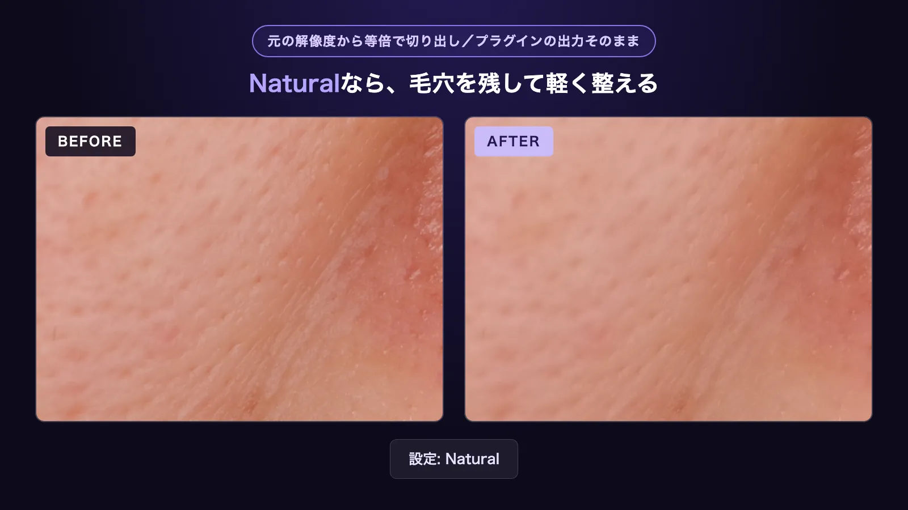
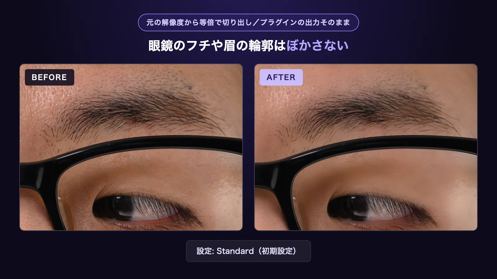
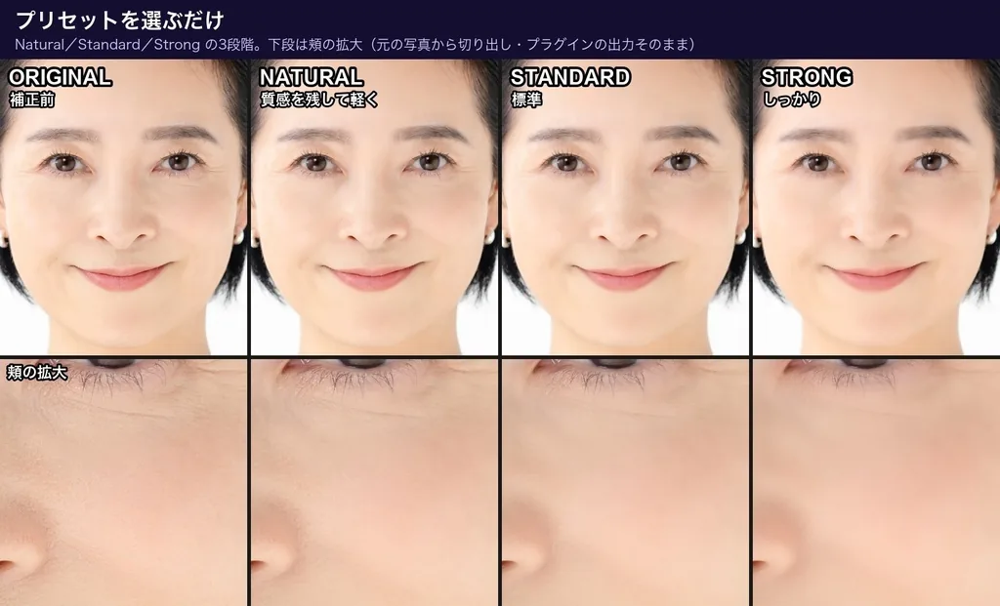

How to Retouch Skin in After Effects: Built-in Effects and a Plugin
This article covers two ways to smooth skin in After Effects: using only the built-in effects, and using a plugin.
I am a video editor in Japan (music videos, interviews and commercials), and I retouch skin as a regular part of that work. I also develop Totonoe Skin Retouch, the plugin described in method 2. In Premiere Pro? See the Premiere Pro version.
Short answer
To retouch skin in After Effects without extra software, duplicate the layer, apply Bilateral Blur to the top copy, limit it to the face with a mask, and lower the top layer's opacity. Bilateral Blur blurs low-contrast skin while it keeps high-contrast edges such as the eyes.
If you have many cuts, or the masking and tracking take too long, a skin retouch plugin does the same job with one effect on one layer.
Method 1: Duplicate the layer and apply Bilateral Blur
Use Bilateral Blur instead of Gaussian Blur. Gaussian Blur softens outlines and skin equally. Adobe describes it as blurring high-contrast areas less, so edges and details are preserved. It works in 8, 16 and 32-bit projects.
- Select the layer and duplicate it. The top copy is the retouch layer, so rename it, for example to "skin".
- On the top layer, draw a mask around the face with the Ellipse tool. Draw further masks around the eyes and mouth (and the eyebrows if they are visible), and set those masks to Subtract in the Timeline panel. Use the Pen tool if you need a shape that follows the face more closely.
- Make the mask follow the face. Select the face mask and choose Animation > Track Mask to show the Tracker panel. In the Method menu, choose Face Tracking (Outline Only), then click Track selected masks forward. For the eye and mouth masks, use Position, Scale & Rotation. If the mask drifts, correct its shape at that frame and run the tracker again from there.
- Raise the feather of the face mask until the border between the retouched and untouched areas is no longer visible.
- Apply Effect > Blur & Sharpen > Bilateral Blur to the top layer. Keep Colorize on. With it off, the effect works on luminance only and the result is monochrome.
- Adjust Radius and Threshold. A larger Radius blurs more, and a lower Threshold preserves more fine detail. I used Radius 12 and Threshold 8.
- Lower the opacity of the top layer so the texture of the layer below shows through. Try 50 to 70% first. I used 60% on a cheek close-up.
Weak points of method 1
- The mask only sets a shape, so hair, a beard or background inside the mask is blurred too.
- At a strong setting, even Bilateral Blur makes the skin uniform and gives it a painted look.
- When the face turns far to the side or a hand covers it, the tracking drifts and you have to correct the mask by hand.
- Each cut needs its own duplicate layer, masks and tracking.
For a few short cuts this is enough. For an interview with dozens of cuts of the same person, the extra work adds up.
Tips for a natural look (both methods)
- For log footage, apply a color conversion first (for example a Rec.709 LUT), then retouch the skin. In log, skin color is hard to judge.
- Do not remove all of the pores and skin texture. Skin looks more natural when some texture remains.
- Set the Composition panel to 100% zoom when you check. At a reduced zoom it is hard to notice when you have gone too far.
- Do the final check on the exported video.
Method 2: Use a skin retouch plugin
I made Totonoe Skin Retouch for my own projects, to avoid rebuilding the duplicate layer, masks and tracking for every cut. It is sold on BOOTH as a one-time purchase of ¥9,800 (about US$65), and there is a free trial with the same features as the full version.
In After Effects, search for "Skin Retouch" in the Effects & Presets panel (Window > Effects & Presets) and apply it to the layer.
Three steps
- Apply the effect Skin Retouch to a layer. Skin is detected automatically the moment you apply it.
- Choose a Preset (Natural, Standard or Strong).
- Adjust the strength with Amount.

You can try this on your own footage with the free trial. It has every feature of the full version, and the only difference is a faint diagonal-stripe watermark on the video.
How it differs from method 1
- It detects skin by color on every frame, so you do not need a duplicate layer, masks or tracking. One effect on one layer is enough.
- The smoothing is edge-preserving (a guided filter), so eyes, eyebrows, eyelashes and hair edges stay sharp.
- Texture adds back fine pore texture, so the skin is less likely to look painted.
- Temporal Stability refers to neighboring frames to steady the detection in moving shots.
- De-Shine and Blemish controls are in the same effect, and Compare shows the original.


Limits
The plugin finds skin by its color, so everyone in the shot with a similar skin tone is retouched, and a background close to skin color can be picked up. If that happens, turn on Show Mask to see the detected area in white and narrow Hue Range. To retouch only one person, combine the plugin with an After Effects mask. Log footage needs a Rec.709 conversion before the effect. It works only in Premiere Pro and After Effects, not in DaVinci Resolve, Final Cut Pro or Avid.
All processing runs on your computer. Footage is never sent to a server, and the plugin works offline after installation. See the user guide for every parameter, and this article for a comparison with another paid plugin.
Requirements and where to get it
- After Effects or Premiere Pro 2025 or later (one plugin supports both), 8/16/32-bit
- Mac: Apple Silicon and Intel, macOS 13 or later, Metal GPU
- Windows: CPU processing only. Windows support is added to the product on November 16, 2026, and existing buyers get it at no extra cost.
A free Windows beta is available until November 15, 2026. Get it from the beta page on BOOTH.
Free trial (Mac, every feature, with a faint diagonal-stripe watermark on the video)
Full version (one-time purchase, ¥9,800, about US$65)
FAQ
What is the easiest way to smooth skin in After Effects?
Duplicate the layer, draw a face mask on the top copy, apply Bilateral Blur, and lower the top layer's opacity. Bilateral Blur keeps high-contrast edges such as the eyes while it softens low-contrast skin.
Why use Bilateral Blur instead of Gaussian Blur for skin?
Gaussian Blur softens outlines and skin equally. Bilateral Blur blurs high-contrast areas less, so eyes and brows stay sharper while skin evens out.
Does Totonoe Skin Retouch work in After Effects?
Yes. It supports After Effects and Premiere Pro 2025 or later, in 8, 16 and 32-bit projects. On Mac it uses the Metal GPU, and on Windows it runs on the CPU.
Do I need to mask and track the face with the plugin?
No. The plugin detects skin by color on every frame, so one effect on one layer is enough. If several people are in the shot and you want to retouch only one, limit the effect with an After Effects mask.
Does the plugin send my footage anywhere?
No. All processing runs on your computer, footage is never uploaded, and the plugin works offline after installation.